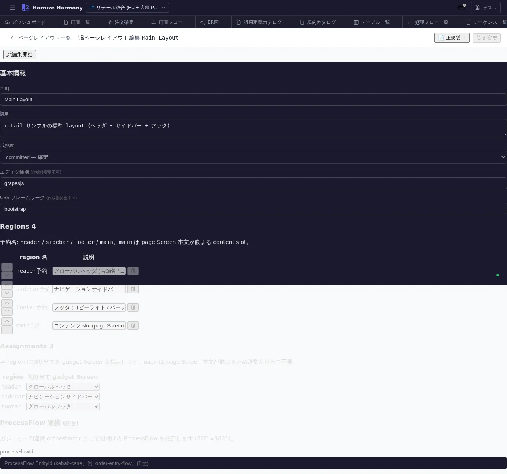

ページレイアウト編集
対象画面:
PageLayoutEditor(frontend/src/components/page-layout/PageLayoutEditor.tsx) ルート:/w/:wsId/page-layout/edit/:pageLayoutId種別: マルチインスタンスタブ
概要
PageLayout (画面の枠組み) のメタ情報 + スロット (gadget 配置位置) を 構造的に編集する画面。ビジュアル編集は PageLayoutDesigner (/page-layout/design/:id) が担当し、本画面はメタデータ + slot 構成の table 編集に特化。
到達経路
- ページレイアウト一覧 (
/page-layout/list) → 行 → 「編集」 - 直接 URL:
/w/<wsId>/page-layout/edit/<pageLayoutId>
画面構成

主要エリア
- EditorHeader — レイアウト名 + id 変更 + 保存 + 「デザインへ」ボタン
- メタ情報 — 名前 / 論理名 / 説明 / 適用 Screen 数 / 成熟度
- slot 一覧 — slot 名 (header / sidebar / footer / dashboard 等) / 配置可能ガジェット数 / デフォルトガジェット / 制約 (1 件のみ / 複数可 等)
- 適用 Screen 一覧 (read-only) — この PageLayout を使う Screen 一覧 (削除前の影響確認)
主要操作
| 操作 | 手段 | 結果 |
|---|---|---|
| slot 追加 | 「slot を追加」 | slot 名 + 制約を指定 |
| slot 編集 | 行クリック | inline でガジェット制約等を編集 |
| デフォルトガジェット設定 | 行のドロップダウン | gadget 一覧 (/gadget/list) から選択 |
| ビジュアル編集へ | 「デザインへ」 | /page-layout/design/:id を新タブで開く (PageLayoutDesigner) |
| 保存 / 破棄 | Ctrl+S / 「破棄」 | edit-session 経由 |
| rename | EditorHeader の id 変更 | RenameEntityDialog |
データ前提
- 新規: slot 0 件、最低 1 slot (例: main-content) を入れた時点で使い物になる
- 意味のある状態: retail の
main-layoutは header (ロゴ + ナビ) + sidebar (メニュー) + main-content + footer の 4 slot
関連仕様書
docs/spec/page-layout.md— PageLayout / gadget / slot 仕様docs/spec/list-common.md
関連 skill
- なし (構造編集中心、AI 生成 skill は将来検討)
既知の制約・注意
- 構造編集 (本画面) と ビジュアル編集 (
page-layout-designer) は別画面 — 業務的な slot 設計は本画面、見た目の調整は Designer - gadget 自体の編集は
/gadget/list→ 個別の Designer - 適用 Screen が 100+ の場合、変更影響範囲が大きいので確認ダイアログ慎重に